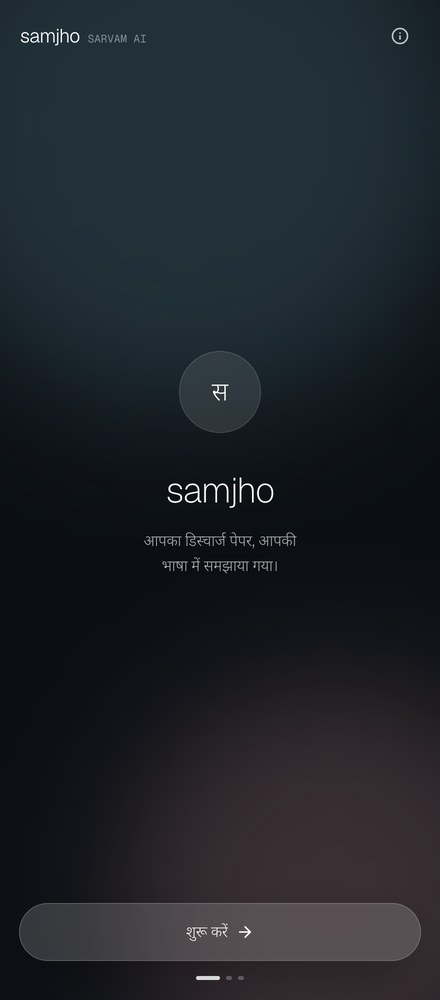
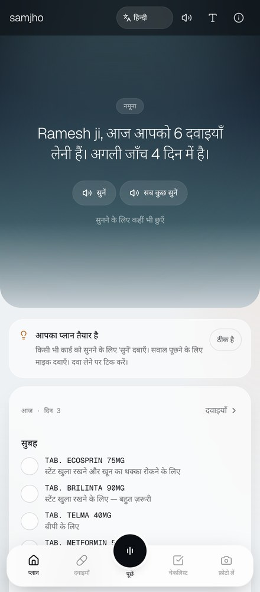
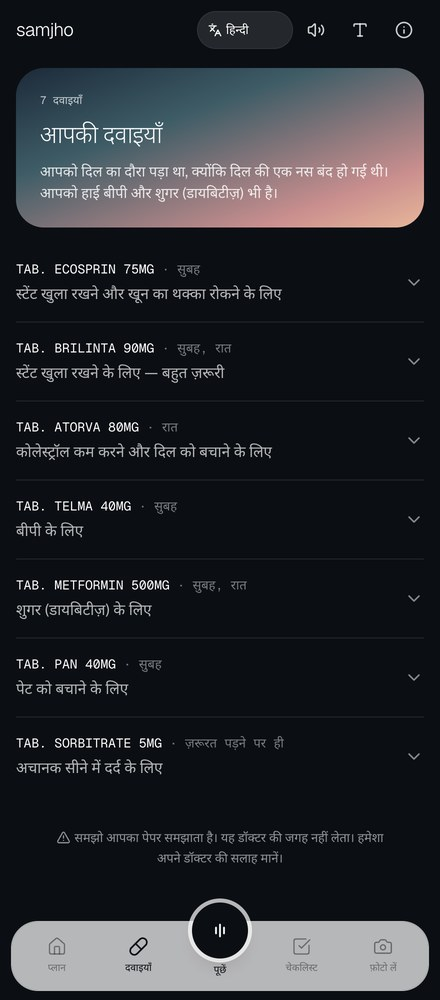
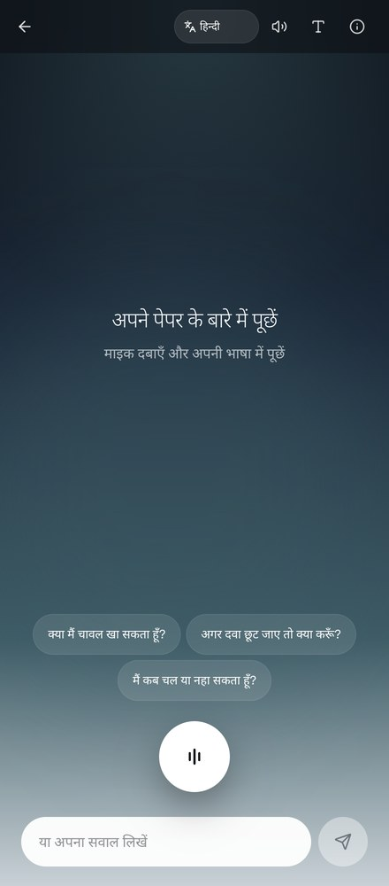
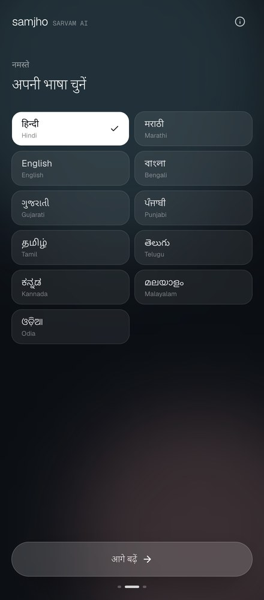
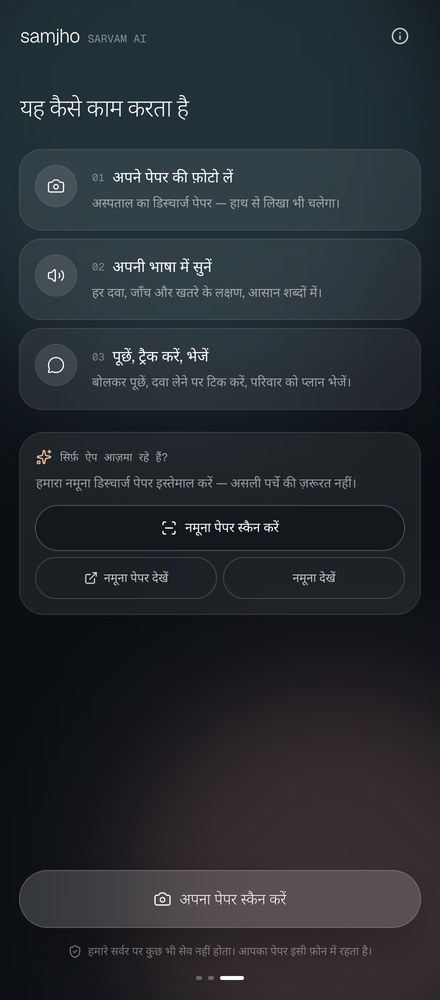
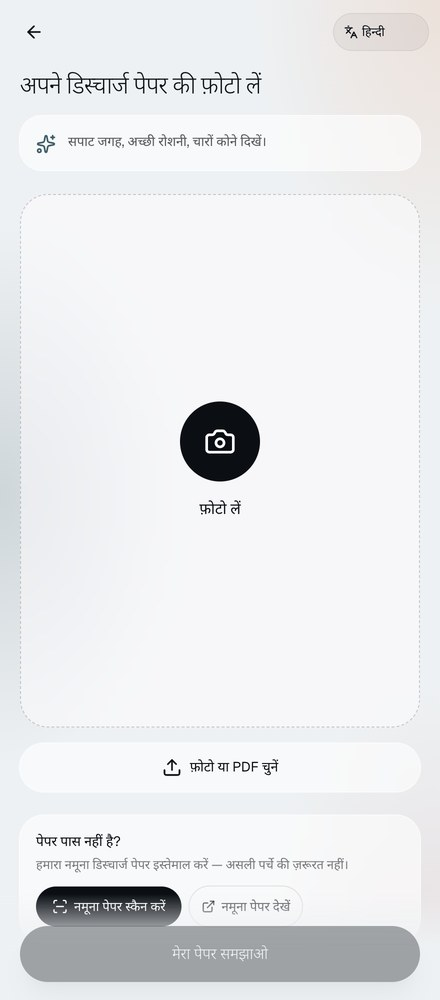
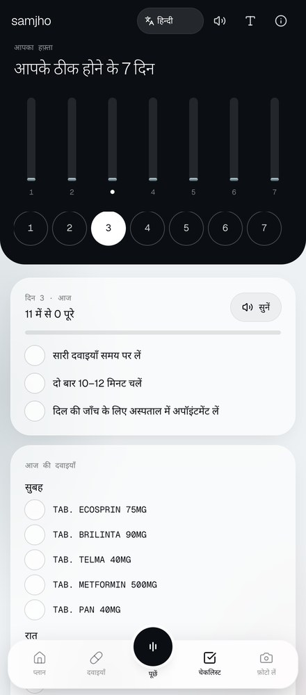

Languages Samjho explains and reads aloud in. Every colour, typeface and component in this guide exists to help a patient follow their discharge paper at home.




The shared visual language of Samjho: a night-to-dusk palette, Geist set light, and frosted-glass surfaces, all defined once in app/globals.css.
Foundations · Colour · Typography · Scripts · Layout and surfaces · Controls · Containers · Navigation and context · Icons, motion and rules
People open Samjho right after a hospital stay. Many are older, many read Hindi or Tamil before English, and all of them have a paper full of drug names they need to act on. The design system keeps that moment calm and readable.
Dark hero, light reading surfaces, light type weights, slow easing. Nothing flashes and nothing is bold.
Eleven languages, ten scripts, one font stack. Layouts are checked with long Indic strings, not just English.
A single 440px column. On a laptop it sits inside an iPhone frame, so a demo looks like the real thing.
@theme inline colours and font stacks, gradients, glass classes, keyframes
bg-night text-ink/70 font-mono ring-white/15
Card, TopBar, MicFab, ListenButton, TickBox and friends, each with a dark prop
Tokens, font stacks, gradients, glass, keyframes, device frame
Loads Geist, Geist Mono and nine Noto Sans scripts
TopBar, Card, Label, ListenButton, TickBox, MicFab
OnboardingFrame, glass and primaryBtn
Drag to mark doses taken
iPhone mockup on screens 1024px and wider
Each page is either night or paper. Shared components take a dark prop to match.
Large text lifts the root from 16px to 19px. Focus rings are peach. Motion stops for reduced-motion users.
Alert red means danger to the patient. Nothing else in the app is red.
The palette follows the hero gradient: cool night blue through teal into warm dusk. Two status colours sit outside that arc and are kept for meaning. Use them as Tailwind utilities with opacity modifiers, never as raw hex.
App background, dark pages, slide track. Also theme-color.
Gradient mid-tone and desktop backdrop glow.
Brand cool accent: ambient blobs, the Ask orb, hero glow.
Last stop of the hero gradient, where night meets paper.
Focus ring, eyebrow accents, warm blobs, dusk cards.
Plan, medicines and checklist sit on paper; text is ink.
Red for danger signs and 108. Sage for doses taken.
Night → slate → teal → mist, with a teal glow on top. Plan hero.
Slate → teal → rose → peach at 160°. Follow-up card.
Paper with peach, teal and rose washes so glass has colour to blur.
Geist carries the whole interface. Display sizes use weight 200 or 300, body text 400, and hierarchy comes from size rather than bold. Geist Mono appears only in small uppercase labels and drug names.
Hero, stat numbers
Titles, buttons, wordmark
Body, labels, tabs
Heaviest used: 108 button
| Specimen at actual size | Style | Size | Weight · leading | Used on |
|---|---|---|---|---|
| 4 days | Stat | 3rem | 200 · none | Follow-up count |
| samjho | Hero | 2.2rem | 200 · tight | Welcome |
| 6 medicines today | Plan title | 1.6rem | 300 · snug | Plan hero |
| Your medicines | Page title | 1.5rem | 300 · tight | Every page head |
| What does Brilinta do? | Section | 1.3rem | 300–500 · snug | Ask answers, Reading |
| Take one tablet after breakfast. | Body L | 0.95rem | 400 · normal | Main copy, buttons |
| Keeps the stent open and stops clots. | Body | 0.85rem | 400 · normal | Card copy, rows |
| Samjho explains your paper. It does not replace your doctor. | Small | 0.78rem | 400 · relaxed | Disclaimer, meta |
| Next check-up | Eyebrow | 0.68rem | Mono · 0.14em | Label |
| Medicines | Tab | 0.62rem | 400 | Bottom tab bar |
All sizes are rem, so the Large text toggle (16px → 19px root) scales every row together.
Hindi and Marathi share Devanagari, so eleven languages need ten scripts. Each Indic script falls through to its own Noto Sans family at weights 300–600, loaded with display: swap and not preloaded.
The browser walks --font-sans left to right and uses the first family that has the glyph. --font-mono is the same chain with Geist Mono first.
Letter-spacing pulls Indic conjuncts apart. When lang is not en-IN, .font-mono tracking is reset to 0.
The {{i:type:14}} button in TopBar sets html[data-large="1"], raising the root to 19px.
Everything lives in one centred column, capped at 440px. Shapes are pills and large-radius cards; depth comes from translucent white over soft colour, not from heavy shadows.
gap-2 default
12pxgap-3 rows
16pxGutter, card stack
20pxCard padding
32pxSection break
128pxClears the tab bar
White 65%, white ring 80%, blur-xl, soft ink shadow.
White 6%, white ring 12%, blur-xl.
Glass needs colour behind it. On light pages that is the .bg-paper wash; on dark pages it is a blurred teal or rose blob. The orb uses .glass-orb: a radial teal → slate → night with an inner shine.
| Viewport | Behaviour |
|---|---|
| Under 640px | The plain app on a night background; the phone is the device |
| 640px and wider | Slate and teal radial glows appear behind the 440px column |
| 1024px wide and 600px tall | The app renders inside an iPhone mockup (393 × 852 screen), scaled to fit. /sample-paper is exempt |
White background, 13px root, .no-print hidden and .print-only shown |
Every shared control has a light and a dark version, picked with a dark prop. All are shown at actual app size. Tap targets are at least 40px.
Sticky, blurred night/60 or paper/80. Wordmark or back arrow left; language, mute, large text and info right. Shown: dark home; light with back, muted, large text on.
primaryBtn: 56px glass pill, light 0.95rem. Solid white for selected, ring-only for minor actions.
Danger is the only filled colour button. Share uses WhatsApp green #25D366 by design.
Idle, playing, loading. 40px pill (48px with big). Reads the card aloud through Sarvam TTS.
On dark pages both switch to white/10 fill with a white/15 ring. The pill lists each language in its own script.
28px circle; checked is sage.
Mono 0.68rem, uppercase, 0.14em.
Active step stretches to 24px.
Content is grouped into 28px cards that fade up as they scroll into view. Status lives inside them: red for danger, dusk for what comes next, sage for done.
64px night track, 56px white thumb. Past 75% confirms; otherwise it springs back. Done turns sage.
A floating glass tab bar keeps the five main places and the voice button one tap away. Onboarding runs on night; reading pages run on paper with a night hero.
68px .glass-light / .glass-dark bar, 30px radius. Active tab sits in a glass pill; Ask is a raised 58px ring around .glass-orb.




Welcome, Language, Guide, Ask. Teal and rose blobs drift behind glass panels.
Plan, Medicines, Checklist, Scan. A night hero melts into paper via .hero-gradient.
TopBar, Card, ListenButton, TickBox and the tab bar, switched with one dark prop.
Icons are Lucide at a 1.6 stroke, so they sit as lightly as the type. Motion is eased out and gentle, and switches off entirely when the system asks for reduced motion.
16px inline · 18px in headers · 20px in the tab bar · 22–24px in the orb. Stroke 1.6, 2 for the active tab, 3 for the TickBox check. *Waveform is a custom three-bar SVG in ui.tsx.
| Motion | Spec | Where |
|---|---|---|
| Card reveal | Opacity 0 → 1, y 14 → 0, 450ms, once in view | Card |
| Page intro | Fade and rise 10–16px over 600–800ms; list items 100ms apart | Onboarding |
drift | 14s loop, translate ±6%, scale 1 → 1.12 | Ambient blobs |
breathe | 1.6s pulse, scale 1 → 1.35 while fading out | Listening ring |
| Tick | Spring, stiffness 500, damping 18 | TickBox |
| Press | active:scale-95, 0.97 on tiles, 0.98 on wide buttons | All buttons |
bg-night, text-ink/70), never raw hex.dark to match.:focus-visible ring.